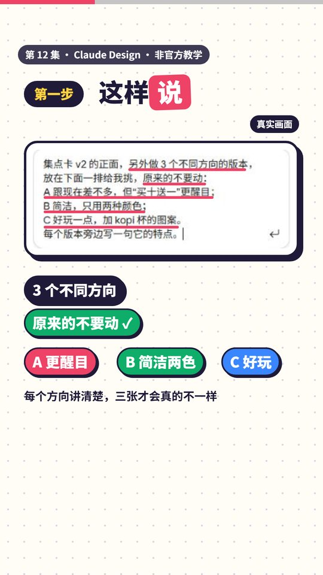
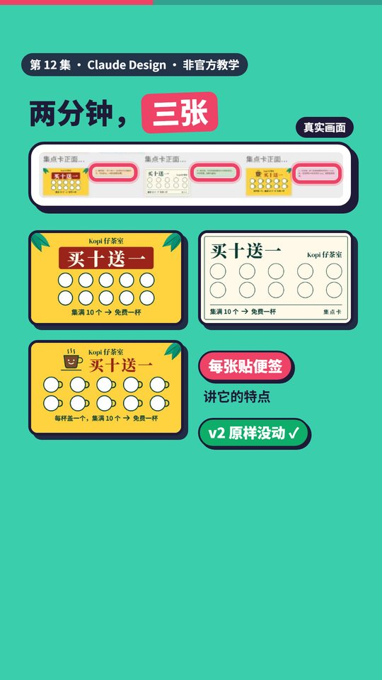
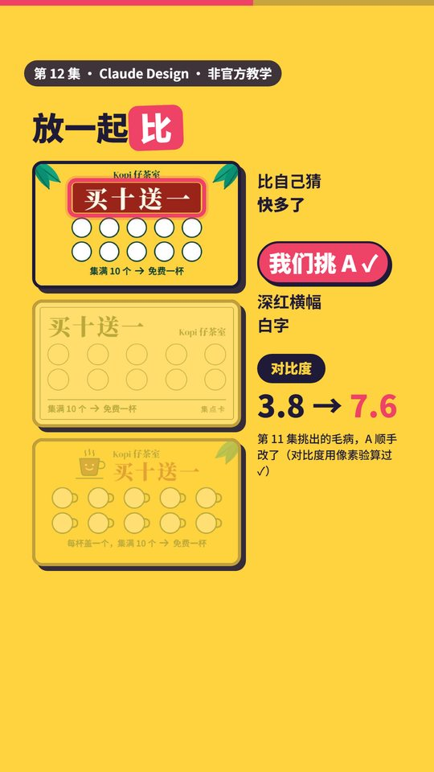
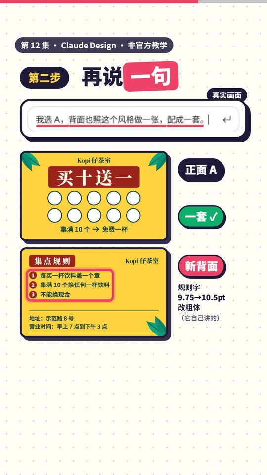
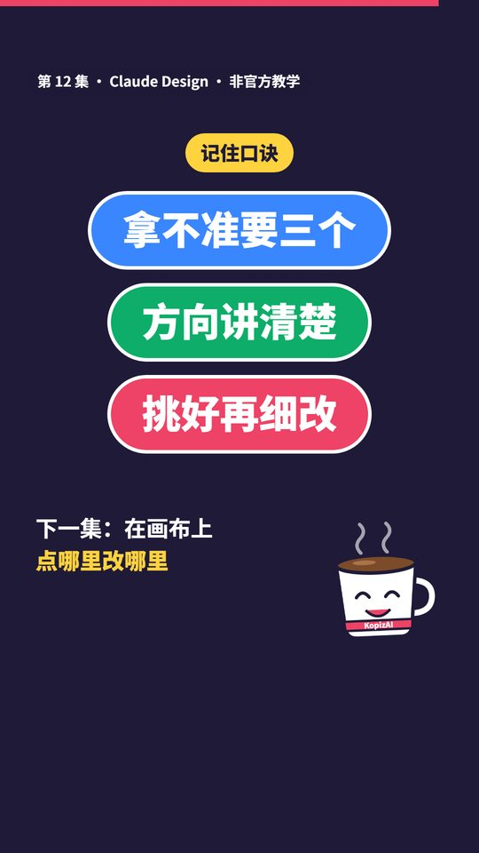

第 12 集 · 叫 Design 一次做三个版本给你挑
一句话： 拿不准要哪种风格，就叫 Design 一次做三个不同方向的版本，每个方向讲清楚，原来的不要动；放在一起比，挑好一个，再叫它照这个风格细改。
对照官方文档和真实界面核对日期：2026-11-25 ｜ 时长 44 秒 ｜ 非官方教学
为什么要三个
官方说明的小技巧里有一条：如果拿不准方向，就叫 Claude 给你看 2–3 个选项，比较几个现成的，比自己猜快得多。我们再加一点：每个方向讲清楚（醒目、简洁、好玩），三张才会真的不一样。
跟着做
第一步：另外做三个不同方向的版本（视频 00:05）
我们拿第 11 集改好的集点卡 v2 来试，在同一个设计里说：
- 另外做 3 个，放在下面一排，原来的不要动
- 每个方向讲清楚：A 更醒目、B 简洁两色、C 好玩一点
- 每个版本旁边写一句它的特点，方便比较
可以直接复制（换成你的东西）：
＿＿（哪一张）另外做 3 个不同方向的版本，放在下面一排给我挑，原来的不要动：
A ＿＿（比如：跟现在差不多，但最重要的那句更醒目）；
B ＿＿（比如：简洁，只用两种颜色）；
C ＿＿（比如：好玩一点，加一个小图案）。
每个版本旁边写一句它的特点。

结果：三张排成一排，每张贴便签（视频 00:13）
我们这次大约两分钟就好了。v2 下面多了一排 A、B、C，每张右边贴一张便签写它的特点，v2 原样没动：
- A 醒目版："买十送一"改成深红横幅白字，盖章圈改纯白。
- B 简洁两色：奶油白配深墨绿，它说三个里面最好印。
- C 好玩版：左上角一杯笑脸 kopi，盖章圈变成带杯柄的小杯子。它也提醒：圈约 9 毫米，章太大会压到杯柄。

放在一起比，挑一个（视频 00:18）
我们挑 A。"买十送一"的对比度从 3.8:1 升到 7.6:1，刚好把第 11 集挑出来的毛病也改了。这个数字我们用画面的颜色自己算过一遍，对得上。

第二步：挑好了，再叫它配成一套（视频 00:26）
我选 A，背面也照这个风格做一张，配成一套。
A 的背面放在 A 正面的正下方，其他版本都没动。同一套颜色，"集点规则"也用深红色块白字；它还顺手把规则的字从 9.75pt 加大到约 10.5pt、改成粗体（这是它自己说的，我们没另外量）。

口诀
拿不准要三个，方向讲清楚，挑好再细改。

时间点
| 时间 | 内容 |
|---|---|
| 00:00 | 拿不准哪种风格？一次做三个给你挑 |
| 00:05 | 这样说：另外做三个不同方向的版本 |
| 00:13 | 两分钟，三张排一排，每张贴便签 |
| 00:18 | 放一起比，挑 A（对比度 3.8 → 7.6） |
| 00:26 | 再说一句：我选 A，配背面 |
| 00:33 | 口诀，下一集预告 |
顺便知道
- 官方说明写 Claude Design 还没有版本历史，所以"原来的不要动"要自己讲。另一个做法是跟它说 "Save what we have and try a completely different approach"（先存好现在的，再试一个完全不同的方向），它会存好并告诉你存在哪里。
- 三个版本的颜色都可以在 Tweaks 里换（它自己提的）。
- 挑好以后还可以继续细改，第 11 集的"问题要具体"在这里也用得上。
- 店名、地址是示范资料，不是真的店。视频开头的问号卡片是动画加的。
来源：Claude 帮助中心《Get started with Claude Design》，以及 2026 年 11 月 claude.ai 的实际操作 https://support.claude.com/en/articles/14604416-get-started-with-claude-design